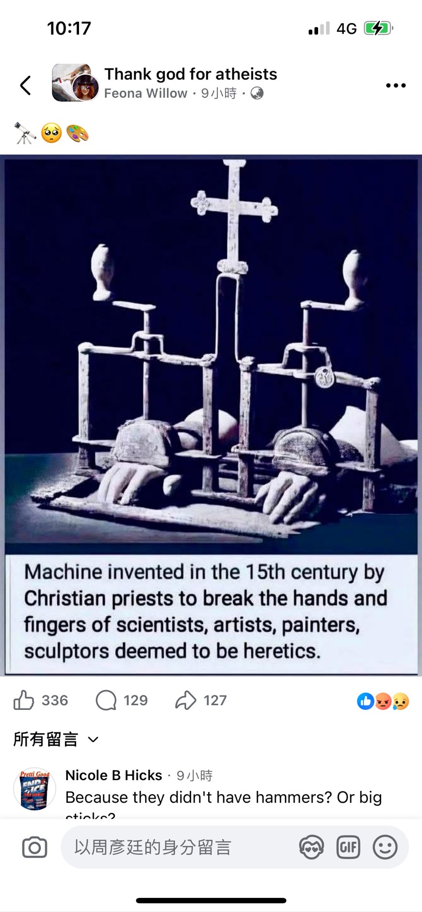
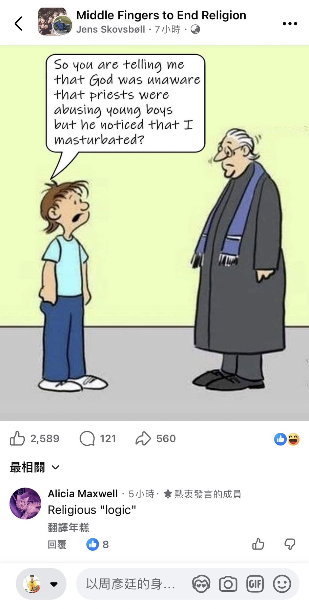
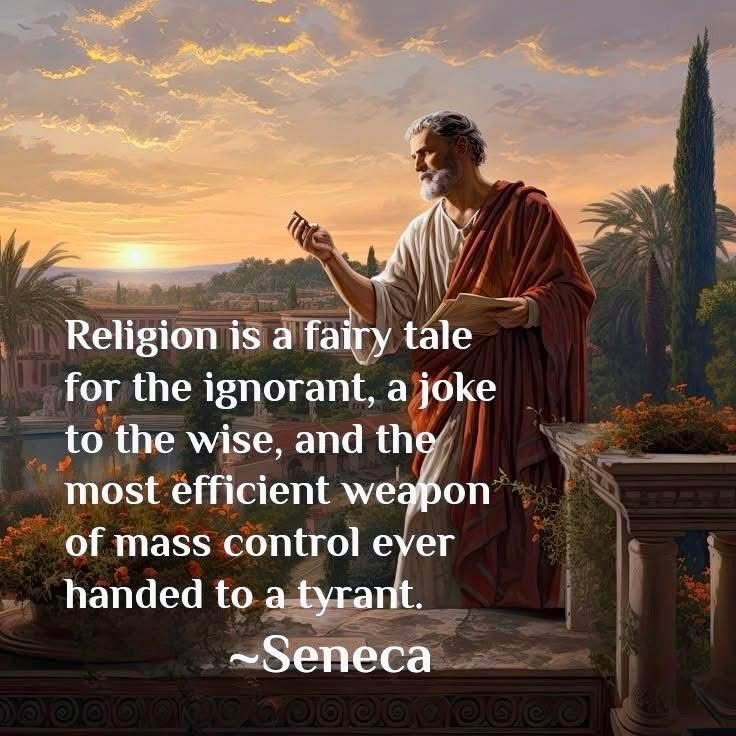

當聖光成為審判之刃：吸血鬼、宗教與道德的反思
目錄
隨便點選下方其中一個主題便能直接跳到該主題的說明區- 前言
- 一、十字架與聖光：神聖的象徵，還是審判的工具？
- 二、案例分析：為何基奴．李維和蓋瑞‧歐德曼主演的《吸血鬼：真愛不死》和休．傑克曼與理查．羅森堡主演的《凡赫辛》沒有放進標題一的例子中？
- 三、神之沈默：為何聖光在黑暗面前不發一語？
- 四、宗教史上的「正義」與「暴力」
- 五、從原始經典看暴力的法統——耶和華的「意志」與教會的「執行」
- 六、當「救贖」淪為代碼抹除：被剝奪的選擇權
- 七、虛構作品的「反向除錯」：誰才是真正的怪物？
- 結語：從「神聖之光」到「理性之光」
- 補充說明：撇除教會與吸血鬼對立這種只會出現在電視劇、電影、動畫、遊戲裡的虛構情節，為何我覺得現實中的驅魔也是假的
- 延伸閱讀（皆為不同的GitHub Pages專案）
前言
在無數的奇幻與哥德文學、電影、遊戲中，十字架、聖光、聖水等宗教象徵常常成為對抗邪惡的武器。尤其是在吸血鬼題材中，這些元素幾乎是標準配置：只要吸血鬼靠近聖物，便會灼傷、退縮，甚至化為灰燼。然而，當我們回望歷史、重新審視這些象徵與其背後的宗教背景，不禁要問：「什麼是真正的邪惡？什麼又是正義與救贖？」
一、十字架與聖光：神聖的象徵，還是審判的工具？
基督教特別是天主教的神學體系中，十字架象徵著耶穌的犧牲與救贖，聖光則象徵著神的恩典與真理的照耀。然而，在以吸血鬼為題材的故事中，這些象徵不再是溫柔的指引，而是具有直接毀滅性的力量。
吸血鬼在許多故事中不一定是純粹的惡魔或邪靈，有時甚至是被詛咒的凡人、有苦衷的角色，甚至是帶有道德掙扎的存在。例如：
-
在日漫《Hellsing》（皇家國教騎士團）中，梵蒂岡第 13 課的亞歷山大·安德森（Alexander Anderson）神父，是將「聖光」化為極端暴力最鮮明的縮影。安德森平時是溫柔的孤兒院老師，但在宗教旗幟下，他卻是冷酷的「神之刺客」。對他而言，正義並非慈悲，而是徹底剷除所有不信奉其教條的異端。
這種狂信使得他無視個體的善惡。他不僅獵殺邪惡的吸血鬼，也毫不憐憫地殺害信仰不同派系的人類。這種「以神之名」的屠殺，在他眼中被視為一種神聖的淨化。更具諷刺意味的是，為了打敗對手，他不惜將聖物「海倫娜的聖釘」刺入心臟，將自己轉化為喪失人性、僅剩殺戮本能的植物怪物。
當他為了「守護神」而選擇捨棄人性的那一刻，他與他所憎恨的魔鬼已無二致。阿爾卡特對他的嘲諷點出了核心矛盾：「你不再是人，你只是一個祈禱的怪物。」這再次證明，當宗教象徵被用來正當化無止境的暴力時，所謂的聖潔只是一層掩蓋殘酷的虛假外衣，而真正的人性之光早已在狂信中熄滅。
- 在系列電影《暮光之城》（英語：Twilight）中，庫倫家族的領導者卡萊爾·庫倫（Peter Facinelli 飾演）出生於 17 世紀的倫敦。他的父親是一位極端狂熱的牧師，以「剷除邪惡」為名，發起針對吸血鬼、女巫與狼人的獵殺行動。然而，這位牧師因缺乏辨別能力，導致無數無辜的平民被冠上魔鬼之名而冤死。
卡萊爾在繼承父親的職位後，雖意外發現了真正的吸血鬼巢穴，卻在行動中被轉化為吸血鬼。他深知父親的殘酷與盲目，因此選擇躲在陰暗處獨自承受轉化的痛苦，甚至多次嘗試自殺以求清白。
諷刺的是，這位被宗教教條視為「永世不得救贖」的吸血鬼，最終卻憑藉強大的自律成為一名救人無數的醫生，並終身堅持不吸食人血的「素食者」原則。與他父親那種以神之名行暴力之實的偽善相比，卡萊爾作為「魔鬼」卻展現了更接近神性的慈悲。這再次讓我們反思：當宗教體制將特定身份定義為「邪惡」時，它是否也同時扼殺了那些最純潔的靈魂？
-
在美國電影《德古拉：永咒傳奇》（英語：Dracula Untold）中，德古拉（Luke Evans 飾演）原本是瓦拉幾亞的國王，為了保護自己的子民和使自己的王國免受土耳其大軍的侵害，他選擇通過與山洞裡的魔鬼做交易變成吸血鬼。
然而，當子民們發現自家的國王觸碰到陽光和銀製品會燒起來後開始排斥他，認為他走向與上帝背道而馳的邪路。於是他說出了以下的金句名言：This is your loyalty, your gratitude? Fools! Do you think you are alive because you can fight? Come on! You are alive because of me! Because of what I did to save you!
也就是說，德古拉曾為國家和人民做出巨大犧牲，但為何他為了人民生存的決定最終卻被視為「惡」？這讓我們反思，是否當一個人反抗不公時，他就一定是「邪惡」？
-
在索尼動畫電影《尖叫旅社》（英語：Hotel Transylvania）系列中，吸血鬼與人類獵魔人的善惡反差被推向了極致。在第一集中揭露了德古拉（Adam Sandler 配音）悲痛的創傷：十九世紀末（1895 年），深愛人類、愛好和平的妻子瑪莎（Martha）遭到手持火把的人類暴民殘忍燒死，迫使德古拉建造尖叫旅社庇護弱小的超自然族群，並沉痛指出「人類才是真正的怪物」。
而到了《尖叫旅社 3：怪獸假期》中，這種獵魔偽善更以亞伯拉罕·凡赫辛（Abraham Van Helsing）的偏執形象赤裸顯現：凡赫辛自詡正義代表，數十年如一日對德古拉展開瘋狂追殺；為了將所有怪獸趕盡殺絕，他甚至不惜將自己改裝成只剩頭顱與發條齒輪的半機械殘軀。
在最後的高潮決戰中，凡赫辛在郵輪上演奏「毀滅樂章」操控巨型海怪克拉肯，意圖將整船無辜度假、載歌載舞的善良怪獸全部撕碎屠戮。電影藉此狠狠諷刺了盲目的獵魔狂熱：那些只想過平靜生活的吸血鬼與怪獸保有人性與愛，而滿嘴以消滅黑暗為天職的凡赫辛，卻在無差別滅絕異族的偏執狂念中，早已將自己活成了真正冷血無情的恐怖怪物。
-
在中國大陸的網絡大電影《你好，吸血鬼先生》（英語：Hello Mr. Vampire）中，洛塔公爵和他的妻子都是吸血鬼，但他們從不傷害人類。後來，一群虔誠的教士和主教組織了一場獵殺行動，試圖處決這對夫婦。
洛塔公爵成功逃走並流浪到中國，而他的妻子則不幸喪命。逃到中國後，洛塔與晚清公主方墨（也就是女主角）相戀，但他從不上教堂，這讓當時也跟著來中國傳教的白人感到奇怪。
當這些傳教士得知洛塔是吸血鬼後，他們決定使用十字架、聖光法陣和銀製武器對付他。洛塔很生氣地說：「這十四年來，我從未傷害過任何人！不要逼我！」
為首的主教卻說：「以主的名義，你開設醫院收集鮮血。難道你就不怕主的懲罰嗎？野獸，永遠是野獸！」當方墨請求他們放過洛塔時，主教卻憤怒地對她說：「公主，你已經被這個魔鬼給蠱惑了！我在挽救你！」
這不僅揭示了教會對「異類」的極端排斥，也讓我們思考，魔鬼與「善」的界限究竟在哪裡？洛塔公爵並不想傷害人類，他的行為是否真的該被視為邪惡？
-
在 Netflix 動畫《惡魔城》（英語：Castlevania）中，德古拉是一位舉止優雅、博學多聞、精通科學的學霸吸血鬼，且從不吸食人血。當身為人類的麗莎特地來到他的城堡向他請教科學知識時，他不僅傾囊相授，兩人更結為夫妻。德古拉也因此間接幫助人類改善生活，人品高尚。
麗莎利用所學開設診所救治窮苦百姓，深得病人感激。在忙碌中，她曾對著吊墜裡丈夫的畫像低語：「你正在遠方旅行，我每天都恨你不在這裡。但我愛你給了我能幫助人們的知識！（I hate that you are not here, every day. But I love that you gave me the knowledge to help people!）」
然而，在當時的神權壓迫下，懂太多科學竟被視為女巫。麗莎在診所救人時被教會強行抓走，並綁上火刑柱燒死。她死前仍展現大愛，要求德古拉寬恕這些無知的人。德古拉憤怒地告知人類有一年時間搬離，否則將召喚惡魔大軍。該死的是，人類不但沒把警告當一回事，一年後竟還在原地慶祝宗教節日，導致德古拉最終帶著大軍發動了屠殺。
更諷刺的是，教會甚至洗腦群眾，詆毀救世的神諭團與貝爾蒙特家族。直到特雷弗（Trevor Belmont）當眾揭穿教士們的惡行："You had no problem beating an old man this morning! You had no problem lying to these people about the Speakers! I wonder if the people of the great city of Gresit have ever seen a priest draw a knife before! It was your bishop who brought all this down on us! Your bishop who started it all by killing a defenseless woman!"
當眾人看見本該慈悲的神職人員竟然帶刀行兇，偽善的面具徹底破碎。而教堂內惡魔對葛雷希特主教的審判更是震聾發聵：
（你們早上毆打老人、對群眾撒謊時毫無顧忌！我倒想看看這座城市的居民，以前有沒有見過神父拔刀企圖行兇！是你們的主教殺害了一個手無寸鐵的女人，才開啟了這場地獄！）"God is not here. This is an empty box. Your life's work makes Him puke. Lies in your house of God? No wonder He has abandoned you. ...Your God knows that we wouldn't be here without you."
這告訴我們，當宗教權威無視良知，僅以教條甚至暴力審判他人時，所謂的「聖地」早已空無一物。德古拉的復仇雖然極端，但也是對這種深重偽善的慘烈反擊。
（上帝不在這裡，這只是一個空盒子。你一生的事業令祂作嘔。在上帝的殿堂裡撒謊？難怪祂早已拋棄了你。……你們的神知道，沒有你所做的一切，我們根本不會出現在這裡。）
-
在港劇《殭屍道長》（英語：Vampire Expert）中，毛小方（林正英 飾演）、鍾邦（王書麟 飾演；此角色在劇中為毛小方的徒弟）等人被告魯斯伯爵（李道洪 飾演）轉化成他的同類後，雖然內心依舊善良，仍保有人性與理智，卻被教堂的神父（蕭鍵鏗 飾演）以「聖潔」之名囚禁於教堂地窖。十字架與聖光在此不再是救贖的象徵，而是封鎖逃生路徑、造成魔法傷害的「刑具」，使得不少感染者淒慘死去（毛小方與鍾邦作為故事主角當然有存活下來，但過程一樣很痛苦）。
這種設定令人深思：當一個人因「身份」而非「行為」被定義為邪惡時，審判是否公正？神父一邊將仍有良知的生命活活餓死，一邊像什麼事都沒發生地對信徒宣揚「神的愛」，這種極致的偽善正是對宗教信仰最深重的諷刺。當盲目的教條無視個體的痛苦，宗教便從指引靈魂的明燈墮落為壓迫的工具，與中世紀獵巫運動中冤死無辜者的行為如出一轍。
另一方面，告魯斯伯爵的黑化源於絕望的背叛。他生前曾是虔誠善良的信徒，卻在戰爭中失去封地與心愛的未婚妻莎蓮（麥景婷 飾演）。他在絕望中憂鬱而死後成為吸血鬼，並對這份沉默的信仰發起挑戰。他掐死偽善的神父後，指著耶穌像憤怒咆哮：「我之所以變成這樣，完全是你一手造成的。你容忍那群人搶走我的財富、搶走我的愛人！我曾經無數次向你祈禱，祈求你把莎蓮還我。只要你讓我們在一起，我甚麼都能答應你，但你從來沒聽過我說的話，一次都沒有！你這麼麻木不仁，根本不配叫做神！……我發誓要消滅你創造的世界、消滅你創造的人類，我還要消滅你！神，你到底在哪兒？你出來見我！出來見我！」
感染者的死亡與告魯斯的黑化，讓我們看到宗教信仰若缺乏對現實痛苦的慈悲，反而會成為仇恨的根源。告魯斯的悲劇在於，他的信仰無法拯救他在最黑暗時期的崩潰，反而讓他陷入更深的復仇深淵。這段故事與《惡魔城》的哲學思考交相輝映：真正神聖的並非建築或法陣，而是對人性的理解與救贖。
這樣的角色設定與聖光的「一刀切」式審判產生衝突。如果聖光來自全知全能且慈愛的神，為何不能區分吸血鬼中的善與惡？為何那些仍保有人性與悔意的角色也會在聖光下燃燒？
二、案例分析：為何基奴．李維和蓋瑞‧歐德曼主演的《吸血鬼：真愛不死》和休．傑克曼與理查．羅森堡主演的《凡赫辛》沒有放進標題一的例子中？
在探討上帝與教會系統的漏洞時，我們必須區分吸血鬼的「轉化動機」。這也是為何本網頁在標題一的邏輯論證中，捨棄了主流名作而選擇特定作品的原因：
- 排除《吸血鬼：真愛不死》的原因：該作敘事重心高度偏向浪漫情愛，對於德古拉（Gary Oldman 飾演）如何從虔誠信徒「黑化」的邏輯鏈僅在片頭的前幾分鏡快速跳過，缺乏對信仰體系崩潰的深度數據。
- 排除《凡赫辛》的原因：這部作品中的德古拉（Richard Roxburgh 飾演）屬於傳統的「權力慾望型」反派。他為了追求力量與永生，自願與惡魔簽訂契約背叛上帝。這種「主動求惡」的角色符合二元對立的宗教教條，無法提供「系統性遺棄」或「信仰受害者」的反向除錯數據。
「神在哪裡？當我的家人被殺害、當我陷入絕望的深淵，那位號稱全知的神在哪裡？」
這段「第一人稱」的控訴，精確記錄了一個靈魂被「神之沈默」徹底碾碎的過程。與《凡赫辛》中那個單純追求力量的惡魔相比，告魯斯的反抗源於一種更深層的幻滅：他曾全身心投入那套十字架系統，但系統卻在他最需要維護時當機。
因此，我們選擇《殭屍道長》作為核心案例，旨在揭示：真正的邪惡，往往源於一個宣稱慈悲的系統在面對現實災難時的絕對沈默與不作為。
三、神之沈默：為何聖光在黑暗面前不發一語？
如果神真的愛世人，祂會希望地球上的人們因為宗教而搞得四分五裂嗎？從影視作品到現實邏輯，我們看到的往往是神性的「缺席」與沈默：
- 《殭屍道長》裡的告魯斯伯爵：曾是虔誠信徒，卻在一場戰爭中失去愛人與財富。他無數次向耶穌像祈禱，神卻無動於衷，這種冷漠最終將善良的靈魂推向復仇的深淵。
- 《Castlevania》裡的Lisa Tepes：當她被教會誣指為女巫並綁上火刑架時，那位「全知全能」的神並未現身告知教士們正在犯下暴行。
- 《暮光之城》、《Hellsing》、《Hotel Transylvania》：無論是卡萊爾那冤枉好人的父親、極端暴力的安德森神父、放火燒死瑪莎的人類，還是對德古拉趕盡殺絕的凡赫辛，他們以「神愛世人」為名行惡時，神始終睜一隻眼閉一隻眼。


四、宗教史上的「正義」與「暴力」
若將目光從虛構作品移向歷史，我們會發現聖光與十字架作為壓迫工具的現實版本──宗教迫害、異端審判與獵巫行動。
虛構作品之所以敢於呈現這些陰暗面，是因為現實歷史遠比戲劇殘酷。十字軍東征、獵巫行動、異端審判，造成無數無辜者在「聖光」的名義下被犧牲。
13 世紀的科學家 Roger Bacon 僅僅因為說了一句：「科學應該建立在觀察和實驗的基礎上」，就被教會以忤逆上帝罪關進監獄整整十年。當宗教權威感到受威脅時，他們選擇的不是神愛世人，而是利用權力禁錮真理，如下插入影片所示。
中世紀以來，天主教會不僅壟斷精神世界的話語權，更將異端視為可怕的威脅。在宗教裁判所的審判中，「異端」、「女巫」、「惡魔的僕人」成為方便的指控手段，數十萬人遭到迫害、拷問，甚至被燒死，而這一切都披著「神的正義」的外衣。
這與吸血鬼在虛構故事中面對的處境何其相似？他們未必行惡，卻因其「身份」而成為審判與屠殺的對象。不是因為他們做了什麼，而是因為他們是什麼。這種「存在即原罪」的邏輯，正是歷史上最危險的道德武器。

視覺化的審判：十字架下的粉碎
在歷史的陰影中，宗教符號常被異化為施暴的工具。如圖所示，這台傳說中由 15 世紀教士發明的機器，將十字架作為控制桿，用以粉碎被標為「異端」的科學家與藝術家的雙手。(image_34.png)

邏輯除錯：這種設計揭露了宗教權威最深層的恐懼。他們不只想要抹除思想，更要摧毀「實踐真理」的硬體（雙手）。當聖光的符號與刑具結合，所謂的正義便徹底淪為權力的裝神弄鬼。這也解釋了為何在《惡魔城》或《殭屍道長》中，那些握著十字架行惡的人，本質上就是在延續這種「以神之名行暴」的系統代碼。
五、從原始經典看暴力的法統——耶和華的「意志」與教會的「執行」
從數據一致性來看，中世紀教會的殘暴行為並非「誤解」了神意，而是在貫徹耶和華原始代碼中的排他性與暴力基因。信徒口中的「愛」更像是一個強行覆蓋在殘暴底層上的 Patch，試圖修補那個註定會產生邏輯衝突（Conflict）的信仰系統。


六、當「救贖」淪為代碼抹除：被剝奪的選擇權
從神學邏輯來看，救贖應是上帝提供恩典，人選擇悔改。然而在聖光與吸血鬼的對立中，我們看到的往往是「無差別的物理抹除」。
-
「存在即原罪」的暴力邏輯：
當聖光成為一種「只要你是吸血鬼就必須燃燒」的自動化執行程序時，它便不再象徵救贖，而是象徵「排除異類」的極權機制。 -
被否定的自由意志：
像卡萊爾、洛塔公爵、Lisa Tepes，或被告魯斯伯爵感染的毛小方和鍾邦等努力行善的角色，依然會被教會的「聖器」傷害。這證明了在那套宗教系統中，重要的不是你的「行為（Code Behavior）」，而是你的「身份標籤（Data Type）」。這種無視個體意志的審判，正是歷史上宗教迫害的核心問題，也是虛構作品批判宗教暴力的關鍵所在。
七、虛構作品的「反向除錯」：誰才是真正的怪物？
現代作品之所以不斷顛覆宗教象徵，本質上是在對現實中的宗教權力進行「反向除錯」。透過將「聖光」描繪成燒死善良女性（麗莎）或關押科學家（Roger Bacon）的兇器，這些作品提出了核心質問：
以「神之名」濫殺無辜、冤枉好人的角色如《Hellsing》裡的亞歷山大·安德森、《Twilight》裡Carlisle Cullen的父親、《Castlevania》裡的教會組織、《Hotel Transylvania》裡手持火把的人類和把自己改造的凡赫辛、《殭屍道長》裡的神父等，與那些從不傷人的「魔鬼」相比，究竟誰更符合邪惡的定義？
虛構作品敢於拍出這些衝突，是因為歷史已經證明：當宗教體制扭曲了神聖的語言來正當化暴力時，那些握著十字架的人，往往比他們口中的吸血鬼更像怪物。
結語：從「神聖之光」到「理性之光」
所謂的「聖光」不應是燃燒異類的烈火，而應是指引理解的微光。如果這道光必須建立在盲目的審判、對科學的排斥以及對弱者的屠殺之上，那麼它便不具備任何神聖性。
我們不應只將中世紀的獵巫與審判視為荒唐的往事，而應當警惕：當代是否依然有人用「絕對正義」的名義，去排斥與自己邏輯不同的人？正如德古拉對偽善者的反擊，或是 Roger Bacon 對真理的堅持，我們真正需要的不是一個「沈默且殘暴的神」，而是一個能容納理性、觀察與慈悲的人間世界。
補充說明：撇除教會與吸血鬼對立的虛構情節，為何現實中的驅魔在邏輯與科學上均無法成立
在基督信仰體系中，驅魔常被包裝為一場凡人借調天界神威對抗深淵惡靈的聖戰。然而，若抽離戲劇濾鏡，從邏輯嚴密性、地理歷史考據與現代自然科學出發，這場儀式的存在基礎充斥著無法自圓其說的根本漏洞：
-
責任歸屬與「全能全善」悖論：
既然一神體系主張萬物皆由造物主所生，魔鬼的源頭亦在系統架構之內。若人類真遭惡意代碼（附身）入侵，最高管理員理應在一行指令內直接從伺服器端徹底清除，而非強迫凡人承受漫長而殘酷的宗教折磨。當歷史上宗教裁判所冤殺先驅、世界大戰生靈塗炭、教會內部爆發系統性貪腐與侵犯醜聞，甚至全球瘟疫肆虐之際，這位「全善全能」的實體始終保持絕對的離線沈默。若祂在真實苦難中缺席，凡人又如何能在密室驅魔中驗證其存在？





-
現代神經精神醫學的降維除錯（病理機制的去神祕化）：
在神經科學與精神醫學成熟前，各類大腦異常放電與精神解離現象被統稱為「惡靈附身」：- 顳葉癲癇（TLE）與神經突觸異常放電：肢體僵直抽搐、反弓震顫、發出古怪喉音，在現代腦電圖（EEG）監測下一目了然，用抗痙攣藥物即可控制，毫無玄學成份。
- 解離性身分障礙（DID）與思覺失調症：人格切換、幻聽與妄想，本質是心理防禦機制的破碎化投射。中世紀與近代的驅魔儀式往往透過強烈暗示、生理剝奪與人身監禁，反向強化了病患的「中邪扮演」，造成如 1976 年德國安娜莉絲（Anneliese Michel）因 67 次驅魔遭活活餓死的醫學與法律慘劇。
-
「黑歷史」的震懾力質疑：
若附身的魔鬼知曉《舊約》中行事殘暴、動輒降災屠城的歷史紀錄（如下兩部本地端影片所示），以一個本身即充斥著非人道行徑的神格威名進行驅逐，其在道德與因果法統上的威懾力何在？
-
「局部性神格」的地理局限：
最顯著的邏輯漏洞在於：號稱創造千億星系的宇宙主宰，其原始通訊紀錄僅存在於地中海東岸貧瘠的黎凡特走廊。對同期處於高度文明的東亞、美洲、大洋洲億萬生靈完全視而不見，足以證明其純粹是中東游牧部落在有限視野下的神話投射。



-
跨系統失效的諷刺（Data Type 衝突）：
在經典電影《驅魔道長》中，當反派從西洋吸血鬼模式切換成東方殭屍模式後，十字架立刻失去效能。這段精準的影視荒謬劇點出了本質：若神聖威能真具備宇宙普世性，豈會因為對手的文化標籤或生理數據結構（Data Type）轉換而直接拋出無效例外（Null Exception）？
結語總結：驅魔儀式實質上是一場建立於精神疾病誤判、文化集體催眠與封閉語境下的心理劇。它試圖用一個在真實浩劫中長久沉默、在地理與科學上充滿破綻的局部神祇，去對抗一個本就由同源體系所虛構出來的「魔」。
超自然教條與神聖禁令往往被包裝為不可違逆的天條，然而一旦置於理性與世俗生活維度，這些枷鎖便不攻自破。下方截圖記錄了筆者與一位長居埃及的友人交流片段：即便身處傳統宗教氛圍濃厚的地理板塊，清醒的理性個體依舊能自主破除飲食禁忌（如食豬肉、飲酒）與教條約束；筆者亦分享了過去在校園中面對傳統教會傳教時，如何以冷靜幽默的理性視角看待群體儀式。這從日常生活層面清晰印證了：宗教禁忌只不過是特定時空下的集體構想，一旦人類啟動理性觀察，所謂的超自然威壓便會瞬間消散。


延伸閱讀（皆為不同的GitHub Pages專案）
- 不要被宗教藝術欺騙了：如果關公、耶穌、佛陀來到現代，他們絕對認不出流行文化中的自己
- 聖經中的大洪水與現代科學
- 亞裔標籤的視覺革命：從蓋爾·加朵和林正英電影看認知的邏輯盲點
- 《吸血鬼與墮天使：黎凡特的非法代碼》（此專案為本網頁的作者欲開發的開放世界的世界觀設定，同時是以基督教的腐敗問題為原型改編而成的科幻作品）